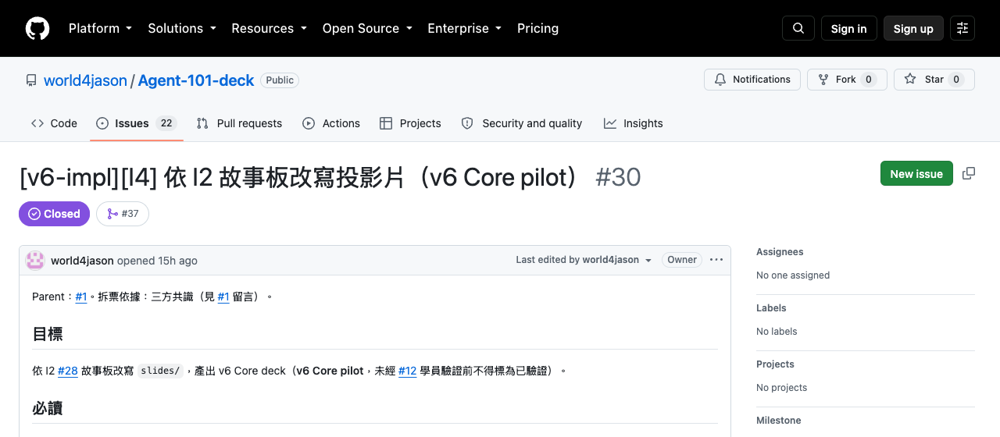
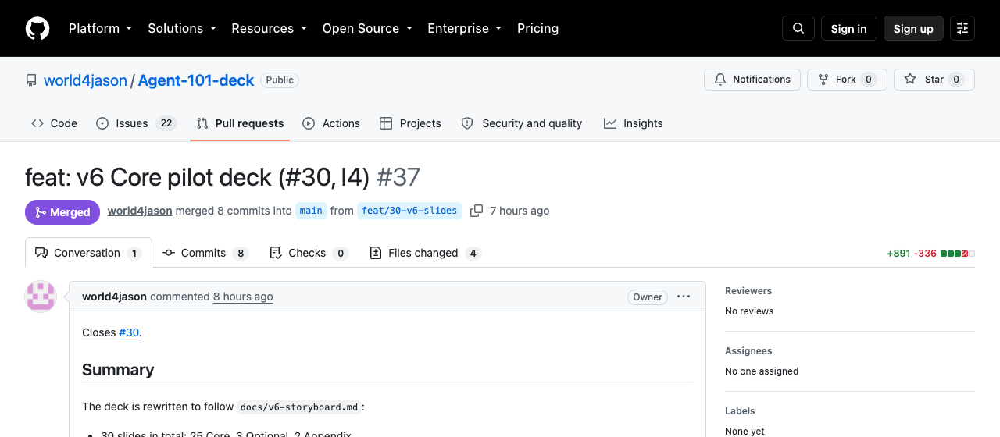
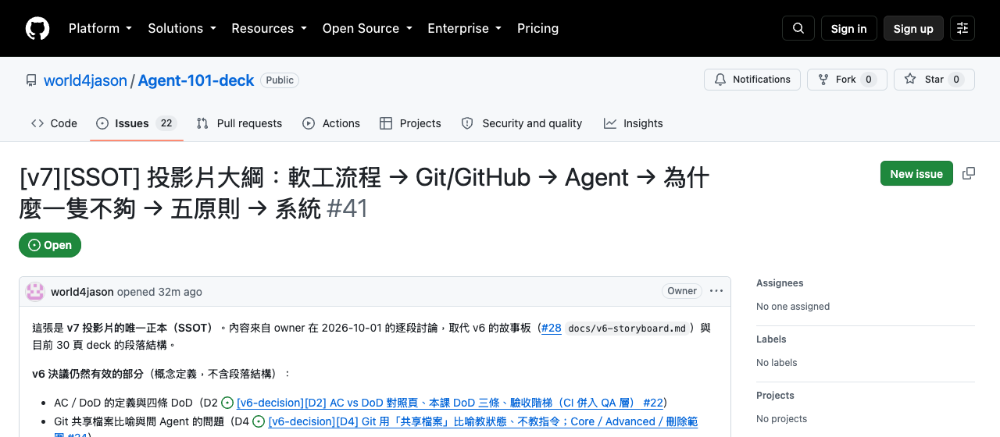

GOALMatching
讓 A 與 B 只有在雙方互相喜歡時才配對。
成功訊號
可量化：上線兩週內，雙方都同意的配對數（例：10 對）；一時量化不了，至少可觀察：沒有使用者回報「對方沒按 Like 卻配對」。
這輪不做
聊天室、推薦。
一個想法，怎麼經過敏捷／看板流程變成交付的軟體？
可量化：上線兩週內，雙方都同意的配對數（例：10 對）；一時量化不了，至少可觀察：沒有使用者回報「對方沒按 Like 卻配對」。
聊天室、推薦。
讓 A 與 B 只有在雙方互相喜歡時才配對。
聊天室、推薦。
Goal 要改、依賴未解除或超出核准範圍時，先停下交 PO/PM。
feature/3-mutual-match → main
依 #3 實作雙向喜歡才配對，附上說明與自我檢查。
逐條 AC 驗證證據
能操作，不代表 AC 全過。
在固定週期內規劃與檢視一批工作。
工作持續流動，一次只做一張（WIP=1）。
Kanban 不規定工作項目格式；User Story 起源於 XP，Scrum 與 Kanban 都不要求一定使用 User Story。
第一段的每一步，實際上落在什麼工具上？
版本紀錄
存檔點共享與審查的平台
共享資料夾＋審查室讓 A 與 B 只有在雙方互相喜歡時才配對。
feature/3-mutual-match → main
changed ≠ committed ≠ pushed ≠ merged ≠ deployed ≠ verified
流程不變，角色換成 Agent 會長怎樣？
| 階段 | 步驟 | 負責 Agent | 傳下去的產物 | 存放位置 |
|---|---|---|---|---|
| 規劃 | Brainstorming → Goal → Ticket | PO/PM Agent | 想法 → Goal → 票 | Issue／看板 |
| 開發 | 依票實作 | Developer Agent | PR | branch／PR |
| 審查 | 檢查 diff 與範圍 | PR Reviewer Agent | review 意見 | PR |
| 驗證 | 依 AC 驗證 | QA Agent | 證據 | PR |
| 接受 | 對照 AC 接受 | PO/PM Agent | 接受 | Issue／看板 |
產物落在 GitHub，不靠對話傳遞。
概念參考：ChatDev（OpenBMB, arXiv:2307.07924）
Agent 取代工作；責任仍由人保留。

提出簡報工作

Developer Agent：Codex
要求修改（Request Changes）

發現 fragments 未隱藏（regression）
修正 fragments 顯示問題，合併 PR #37
Owner 拒絕接受
「偏離主軸」
重寫成這一版
只用一個 Agent、用聊天推進，哪裡會壞？要改成什麼？
| 方式 | 誰決定步驟 | 狀態存在哪 | 怎麼知道做完 | 換 Session 之後 |
|---|---|---|---|---|
| 一問一答 | 人逐步提問 | 對話 | 人看回覆 | 新對話重說 |
| Agentic Workflow | 固定 SOP | 流程執行記錄 | 流程走完 | 依流程記錄接續 |
| AI Agent | Agent 自行決定 | Agent context | Agent 回報 | 依 context 保存方式 |
| Work-driven 多 Agent | 工作流與角色分工 | GitHub 工件 | Review／QA／接受 | 讀票接手 |
Work-driven 結合固定流程的可控與 Agent 的彈性。
概念參考（出處待補）
概念參考（出處待補）
工作單位是票，WIP=1。交接留在 PR、review 與 AC 證據；治理點等人，換 Session 讀票接手。每站都有進入與退出條件：Ready 說明何時可進站，AC 定義要做什麼，DoD 說明何時出站。
第四段的 work-driven 為什麼要這樣設計？每個原則具體怎麼做？
狀態藏在對話裡
GitHub Issue／看板留下工作狀態
新 Session 讀票，不讀聊天把前面全部組起來，是一套什麼系統？
AC 只涵蓋雙向喜歡配對。這個 PR 多做了聊天室，超出 #3 範圍；請移除後再送審。
Request changes